Old River #1 · Sour Ale
Sour ale all'8%, affinata 18 mesi in botti che hanno contenuto Barbera, con lievito Brettanomyces. Da abbinare a formaggi molto stagionati.
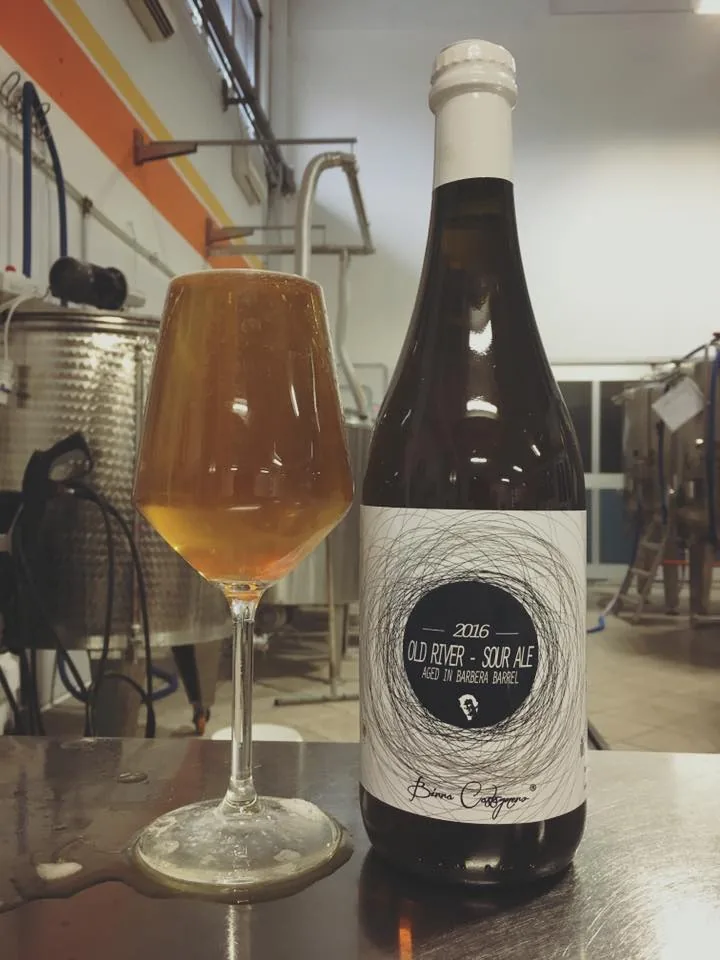
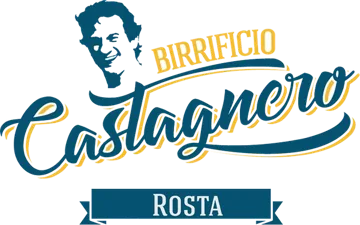
Birrificio indipendente · Rosta (TO) · dal 2014
Piccolo birrificio indipendente: Monica e Mattia, nel lavoro e nella vita. Birra fatta in casa, venduta senza intermediari.
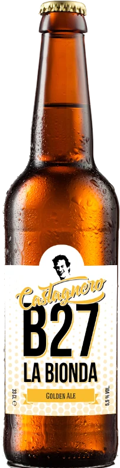
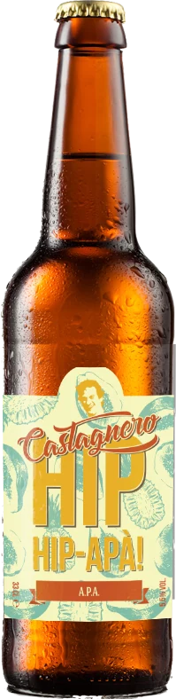
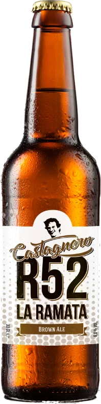
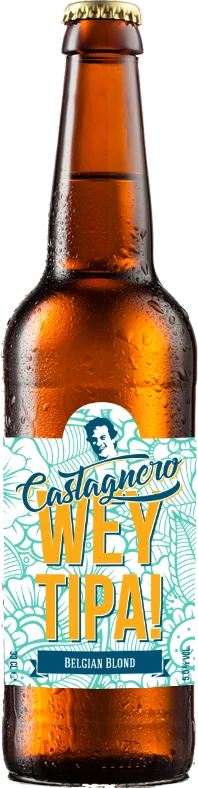
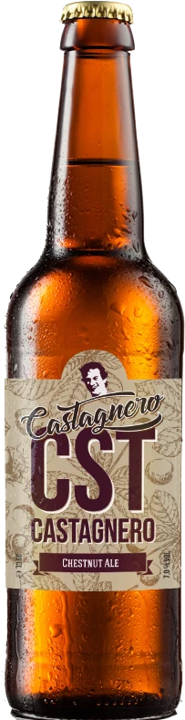
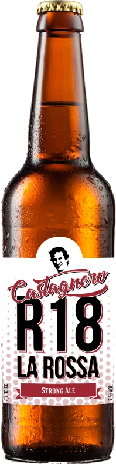
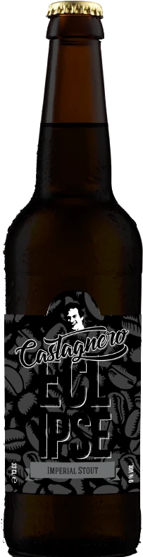
Il birrificio in quattro numeri
Dalla bionda alla stout imperiale: otto birre, una famiglia. Ogni scheda porta alla pagina completa sul sito del birrificio.
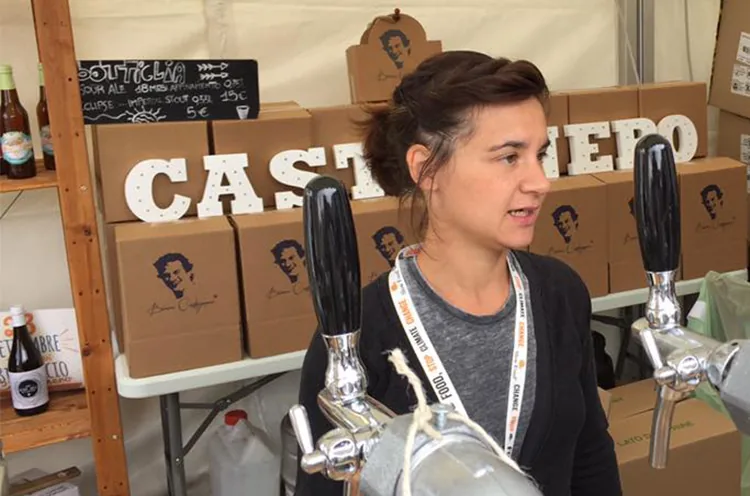
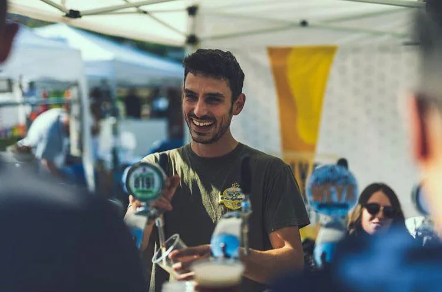
Chi siamo
Birrificio Castagnero è un piccolo birrificio indipendente e di famiglia. Monica e Mattia lavorano insieme e vivono insieme; Mattia è il birraio.
Si parla direttamente con chi la birra la fa: niente agenti, niente intermediari. Si compra online, oppure si passa in taproom a berla alla spina. Il birrificio collabora con altri birrifici per nuove ricette e organizza eventi con musica e cibo, con i food truck del laboratorio gastronomico Officine Castagnero.
Edizioni speciali
Tre birre fuori dalla gamma: acidità, botti, lieviti selvaggi. Fatte in pochi litri, finite presto.
Sour ale all'8%, affinata 18 mesi in botti che hanno contenuto Barbera, con lievito Brettanomyces. Da abbinare a formaggi molto stagionati.

Parte dalla R18 La Rossa: fermenta in vasca e poi sta sei mesi in botte. Note di ciliegia, caramello di malto che bilancia l'acidità, un finale con sale Maldon. Molto facile da bere.
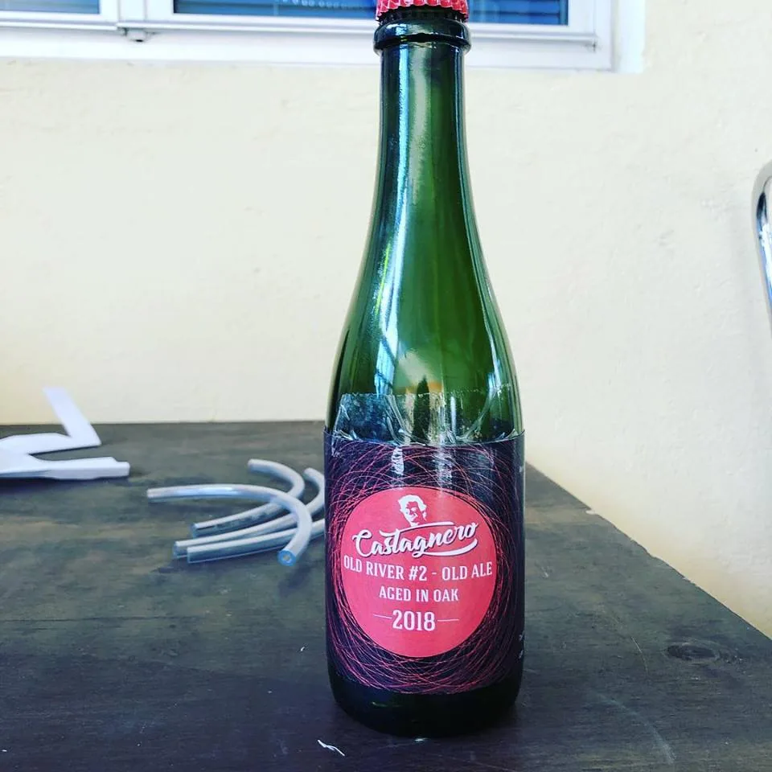
Farmhouse ale al 6,5%, sei mesi in acciaio con uva Cortese e un blend di Brettanomyces della casa. Dorata, profumo di uva e lievito belga, agrumi, bollicina vivace e finale secco.
Taproom all'aperto
La taproom è aperta dal 25 aprile al 30 settembre. È all'aperto: se piove resta chiusa. La cucina chiude, possibilmente, alle 22:30.
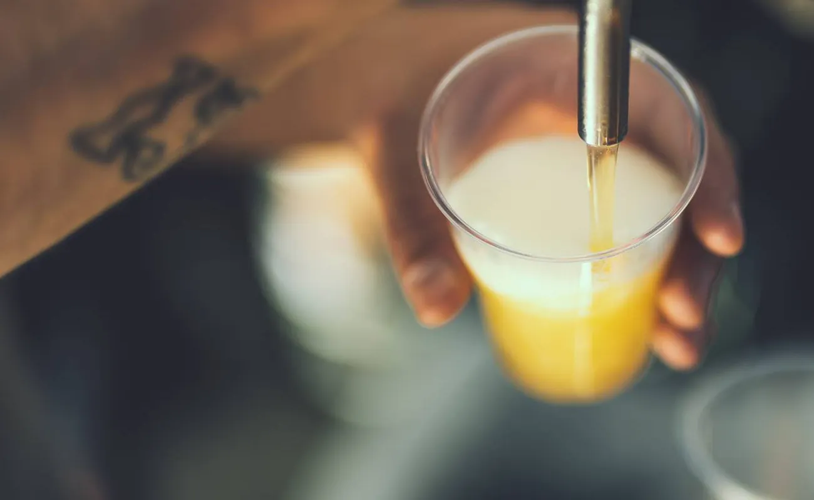
Contatti
Telefono e WhatsApp
Altro numero